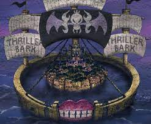

ทริลเลอร์บาร์ค

ขณะเดินเรือไปซักพักพบถังประหลาดที่เปิดออกเป็นพลุ กับเรือหลงเข้าทะเล ฟลอเรี่ยน ไทรแองเกิ้ล พบกับเรือผีสิงที่มีโครงกระดูกพูดได้ ที่ชื่อว่าบรู๊ค แท้จริงเป็นคนที่กินผลโยมิโยมิเข้าไป กลุ่มหมวกฟางจึงกินเลี้ยง แล้วเลี้ยงก็ถูกโยงไปติดกับทริลเลอร์บาร์ค ที่บนเกาะมีแต่ซอมบี้มีชีวิต แล้วคนบนเรือถูกชิงเงาไป โดยบอสของเกาะคือเก็กโค โมเรีย 1 ใน 7 เทพโจรสลัด แล้วกลุ่มหมวกฟางก็ถูกชิงเงาไป นามิถูกจับตัว สมาชิกที่เหลือจึงพบกับบรู๊คอีกครั้งบรู๊คบอกสาเหตุของตนพร้อมกับเรื่องซอมบี้ พอกลับไปรวมตัวที่เหลือก็วางแผนชิงเงา ช่วยนามิ จัดการโมเรีย จนโมเรียปลุกออสด้วยเงาของลูฟี่ ทางโมเรียทราบข่าวว่าทีชเป็นเจ็ดเทพโจรสลัดคนใหม่ กับถูกเตือนเรื่องหมวกฟางจากคุมะ 1 ใน 7 เทพโจรสลัด โมเรียไม่สนกับลุยต่อจนผลออกมาโมเรียกับออสแพ้ลูฟี่ โมเรียก็ฝืนเอาเงาทั้งหมดในทริลเลอร์บาร์คมมาใส่ร่างตน 1 พันเงา สู้กับลูฟี่จนพ่ายแพ้ ทางลูฟี่ที่เหนื่อยล่าจนสลบไป คุมะโผล่มากับรับคำสั่งให้ฆ่าปิดปากคนบนเกาะกับพาโมเรียไปรักษา แต่คุมะมอบขอเสนอให้คือมอบลูฟี่ให้ตน แล้วตนจะไว้ชีวิตทุกคนบนเกาะ แต่ทุกคนไม่เอา คุมะจึงจัดการทุกคน มีแต่โซโลที่ยืนอยู่ โซโลยืนกรานขอแลกชีวิตตน คุมะจึงเอาความเจ็บปวดกับความเหนื่อยของลูฟี่ออกมาให้โซโลที่สาหัสอยู่แล้ว ผลออกมาโซโลสาหัสเกือบตายจนต้องพักฟื้น พอโซโลฟื้นก็มีงานเลี้ยง โดยบรู๊คเข้ามาร่วมกลุ่มด้วย แล้วลอร่ามาบอกเรื่องบีเบิ้ลการ์ดกระดาษแห่งชีวิต โดยลูฟี่พกไว้ใบหนึ่ง จึงทราบว่าชีวิตของเอสใกล้ตาย แต่ลูฟี่ไม่สนจึงเดินเรือไปต่อ